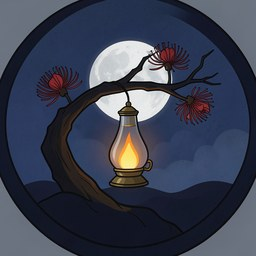

Chuyện Canh Ba · truyện ma dân gian Việt
Đèn dầu vừa thắp, Ông Đồ bắt đầu kể…
Chuyện Canh Ba là kênh hoạt hình kể lại truyện ma, truyện kỳ ảo trong kho tàng dân gian Việt Nam: những truyện chép trong sách cổ như Truyền kỳ mạn lục, Lĩnh Nam chích quái, những tín ngưỡng làng quê như ma da, ma trơi, quỷ nhập tràng, và những ký ức của chính Ông Đồ, người dẫn chuyện của kênh.
Mỗi tập là một câu chuyện trọn vẹn, kể bằng lời mới, không gore, không giật gân rẻ tiền. Hình ảnh, giọng đọc và âm thanh được tạo bằng công cụ AI chạy trên máy của kênh; nhân vật và câu chuyện là hư cấu hoặc phóng tác từ truyện cổ.
Xem ở đâu
Kênh đăng trên YouTube, TikTok, Facebook và Instagram với tên Chuyện Canh Ba.
Công cụ đăng bài của kênh
Kênh dùng một công cụ nội bộ (“Chuyện Canh Ba Publisher”) chạy trên máy tính của chủ kênh để tải video của chính kênh lên các nền tảng trên, sau khi chủ kênh duyệt. Công cụ không thu thập dữ liệu của người xem. Xem Chính sách quyền riêng tư và Điều khoản sử dụng.
About (English)
Chuyện Canh Ba (“Tales of the Third Watch”) is an animated channel retelling Vietnamese folk ghost stories and legends. The channel uses a private in-house tool, “Chuyện Canh Ba Publisher”, which runs only on the channel owner's computer to upload the channel's own videos to YouTube, TikTok, Facebook and Instagram after the owner approves them. See the Privacy Policy and Terms of Service.